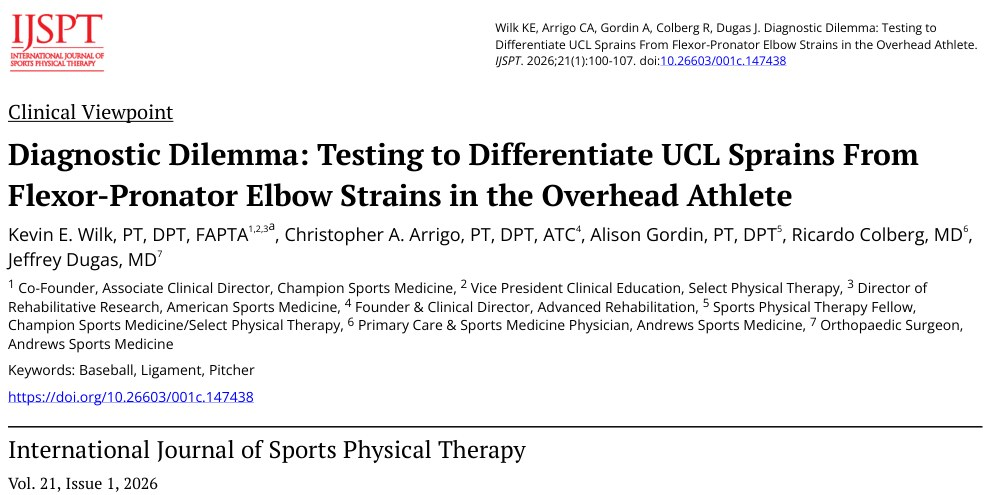
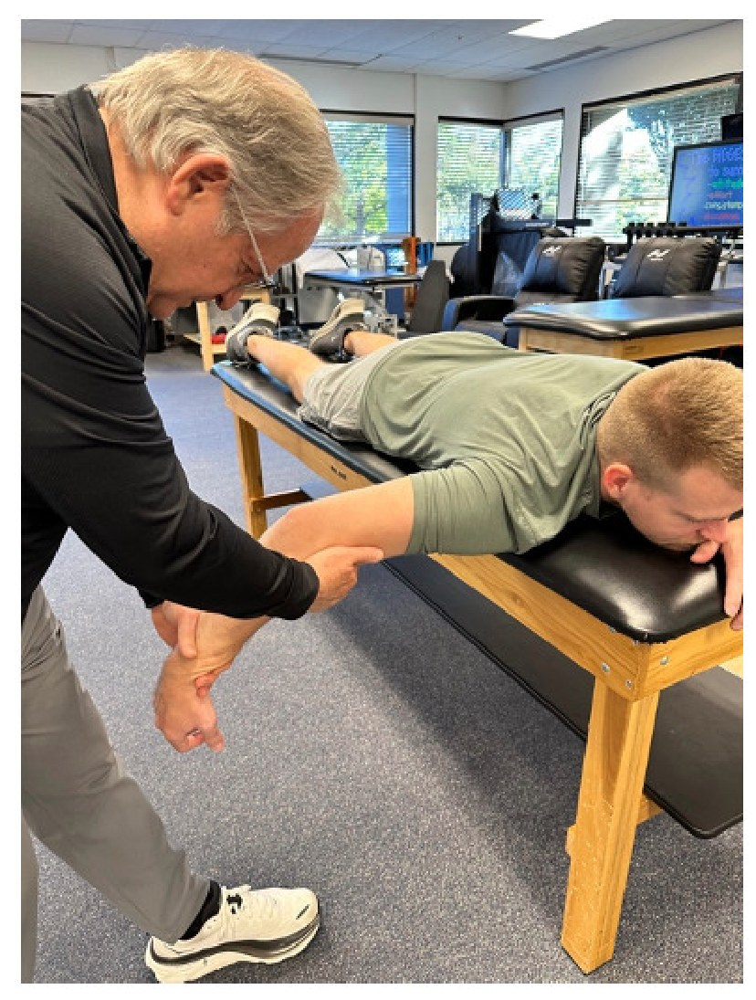
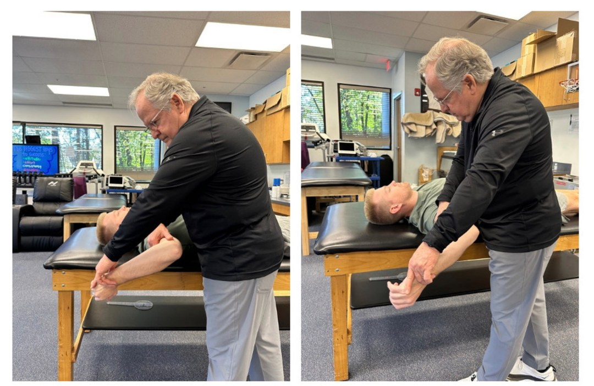
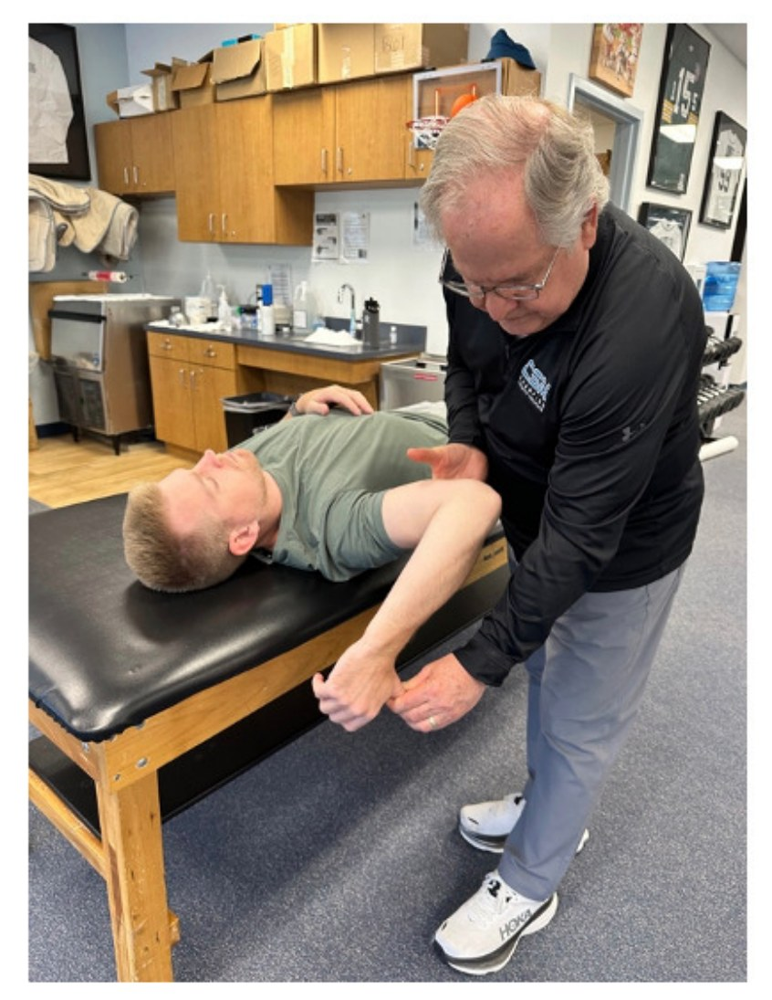
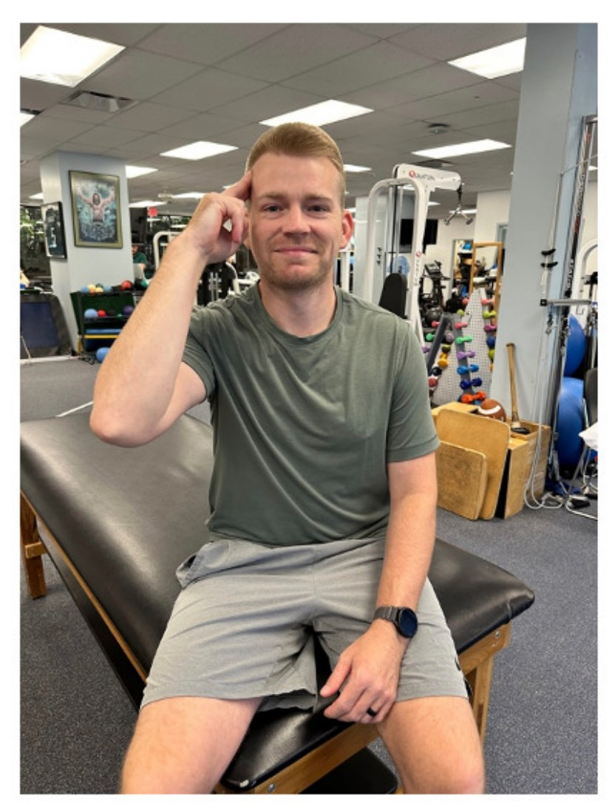
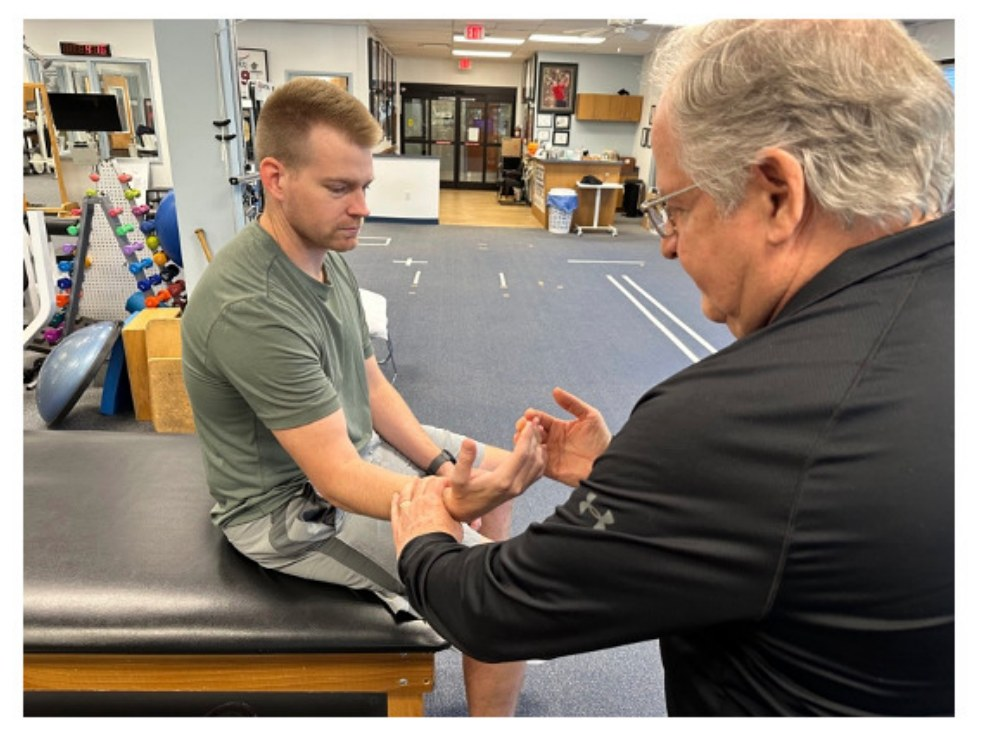
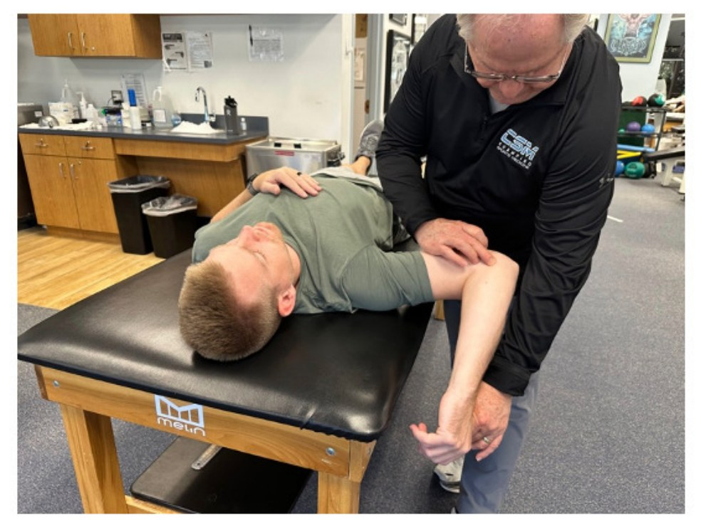
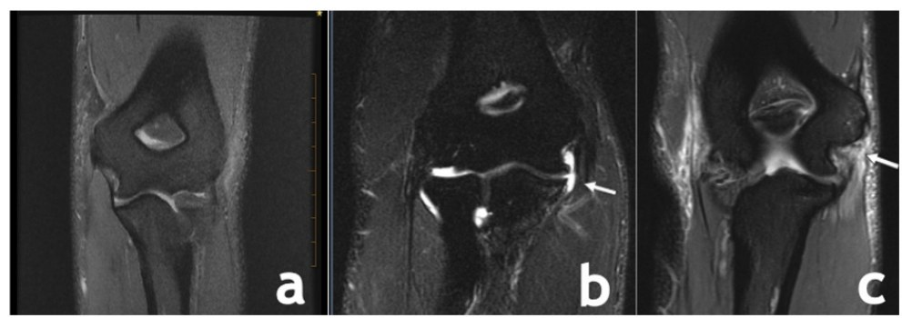
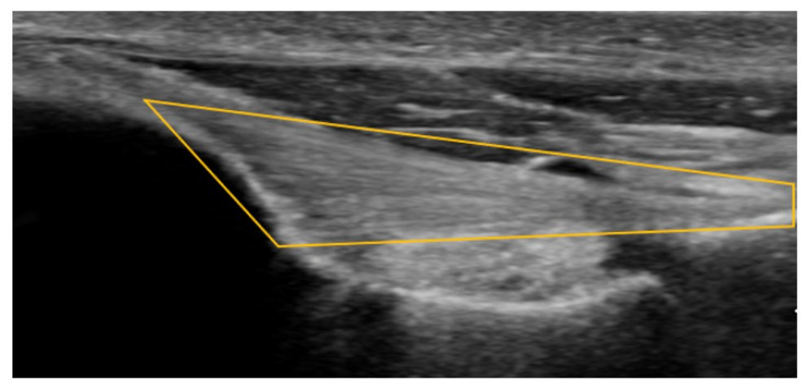
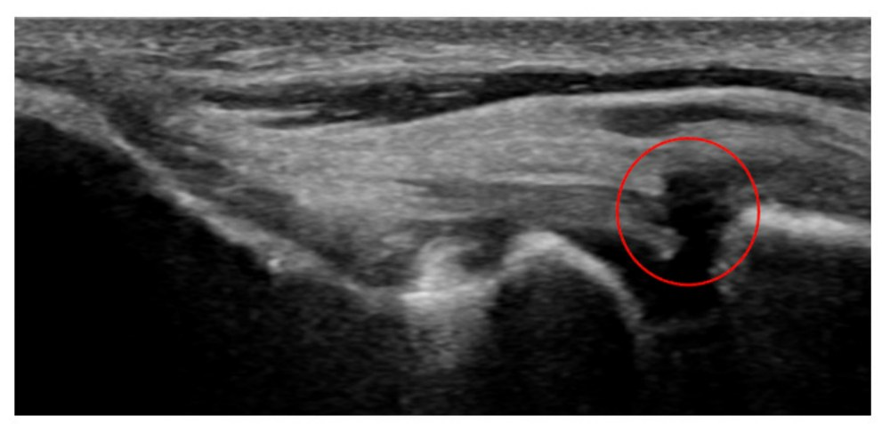

🔖图1：原文首页（IJSPT 2026 年第 21 卷第 1 期）
📚 文献卡片
▪ 英文原题：Diagnostic Dilemma: Testing to Differentiate UCL Sprains From Flexor-Pronator Elbow Strains in the Overhead Athlete（诊断难题：如何区分过头运动员的尺侧副韧带扭伤与屈肌-旋前肌拉伤）
▪ 作者：Kevin E. Wilk, PT, DPT, FAPTA · Christopher A. Arrigo, PT, DPT, ATC · Alison Gordin, PT, DPT · Ricardo Colberg, MD · Jeffrey Dugas, MD
▪ 机构：Champion Sports Medicine · Select Physical Therapy · Advanced Rehabilitation · Andrews Sports Medicine（美国阿拉巴马州伯明翰）
▪ 期刊：International Journal of Sports Physical Therapy（IJSPT）
▪ 年卷期：2026;21(1):100-107
▪ DOI：10.26603/001c.147438（PMCID：PMC13436837）
▪ 文章类型：临床观点（Clinical Viewpoint）
▪ 证据级别：原文标注 Level 5（专家意见）
▪ 关键词：Baseball · Ligament · Pitcher
"In fact, from 2016 to 2024 there has been a 29% increase in the number of UCL injuries in professional baseball players and approximately 25% of all Major League Baseball (MLB) pitchers have undergone UCL surgery."
"事实上，2016 至 2024 年间，职业棒球运动员的尺侧副韧带（UCL）损伤数量增加了 29%，美国职业棒球大联盟（MLB）约 25% 的投手做过 UCL 手术。"
• 肘关节是职业棒球中受伤最多的部位，UCL 损伤最常见、缺赛时间也最长
• 2006-2024 年的 18 年间，因伤进入伤病名单的职业球员增加 250%，缺赛总天数增加 300%
• 仅 2024 年，MLB 球员肌肉骨骼损伤的医疗花费就超过 10 亿美元
• 增长不只发生在职业球员，青少年、高中和大学棒球运动员的 UCL 损伤同样在增加
"Differentiating between a UCL and flexor-pronator injury is often difficult because the symptoms both produce pain in the medial elbow, and they frequently occur together."
"区分 UCL 损伤和屈肌-旋前肌损伤往往很难，因为两者都表现为肘内侧痛，而且经常同时出现。"
UCL（尺侧副韧带）是肘内侧对抗外翻的主要韧带；屈肌-旋前肌群起于肱骨内上髁，覆盖在 UCL 表面，是它的“动态保护者”。两者位置几乎重叠，但处理方式完全不同：韧带损伤可能需要长时间停投甚至手术，肌肉拉伤则以康复为主、恢复更快。
这篇文章的作者团队来自 Andrews 运动医学中心，给出了一套一步步排查的临床思路，并介绍了两个新检查：俯卧位外翻应力试验和“思考者”试验。
作者把鉴别诊断拆成七类临床信息。下表根据原文内容整理：
| 维度 | UCL 扭伤 | 屈肌-旋前肌拉伤 |
|---|---|---|
| 疼痛位置 | 内上髁后下方，沿韧带走行 | 内上髁稍前下方，前臂肌腹处 |
| 受伤机制 | 某一球突然“啪”一声，或反复外翻应力逐渐出现 | 加速期强力离心收缩致急性撕裂，或反复过度使用致慢性损伤 |
| 投球时疼痛 | 挥臂后期和加速期 | 挥臂后期和加速期（两者相同） |
| 不稳 | 外翻应力试验阳性（松弛） | 应力试验稳定、不痛 |
| 特殊检查 | 移动外翻试验、挤奶试验阳性 | “思考者”试验、抗阻屈腕旋前阳性 |
| 影像 | MRI / MRA、超声可见韧带撕裂 | 肌肉、肌腱信号改变 |
| 伴随症状 | 常有环指、小指麻木（尺神经受刺激） | 少见，除非撕裂较大或明显肿胀 |
一句话记住：韧带看“松不松”，肌肉看“抗阻和挤压痛不痛”。
"UCL injuries are often associated with a sudden “pop” coupled with an inability to continue throwing, while flexor-pronator injuries can have an acute onset of pain or a chronic onset with a gradual decline in performance."
"UCL 损伤常伴随突然的“啪”一声，并且无法继续投球；屈肌-旋前肌损伤则可以是急性起病，也可以是慢性起病，表现为运动表现逐渐下降。"
除了受伤时间线，作者建议问清这些问题（原文表 1）：
• 症状是某一球出现的，还是慢慢加重的？有没有“啪”的一声？
• 有没有神经症状，尤其是环指和小指？
• 投球的哪个阶段痛？痛在肘的哪个位置？
• 哪种球种、哪类投掷会诱发症状？投球力度会影响疼痛吗？
• 现在还能带伤投球吗？球速或准度受影响了吗？
• 以前有过这个问题吗？有没有肩、颈、脊柱的伤病或手术史？
• 击球、其他运动或举重训练会诱发肘部症状吗？
"Shoulder flexion should be assessed to ensure unrestricted/full passive motion, because as little as a 5 degrees loss of shoulder flexion has been linked to increased stress on the elbow."
"应评估肩关节前屈，确保被动活动不受限、达到全范围，因为肩前屈即使只丢失 5°，也与肘部应力增加有关。"
• 观察姿势、肩胛位置，有无肩胛运动障碍
• 仰卧位测肩外展 90° 时的外旋、内旋和总旋转活动度，双侧差异超过 5° 要注意
• 检查伸肘、前臂旋前、伸腕有无受限
• 注意基线：无症状投手投球侧也常有活动度丢失，Wright 等报道伸肘少 7.9°、屈肘少 5.5°
"Assessing grip strength is also important as a painful weak grip may be an indicator of flexor-pronator involvement."
"评估握力也很重要，因为握力弱且伴疼痛，可能提示屈肌-旋前肌受累。"
重点查肩胛肌、后侧肩袖、肱三头肌和前臂屈肌-旋前肌，建议用手持测力计和握力计，让结果更客观。
"Ulnar nerve symptoms are frequently present with UCL sprains and not present in flexor/pronator strains."
"尺神经症状常见于 UCL 扭伤，而在屈肌-旋前肌拉伤中通常没有。"
同时要排除胸廓出口综合征和尺神经炎，这两者在过头运动员中都很常见。

🔖图2：俯卧位外翻应力试验：俯卧，肩外展 90° 并充分内旋，屈肘 25°，前臂旋前，检查者施加外翻应力
"This position provides greater isolation of pure valgus stress by controlling the potential rotational substitution of the humerus often experienced in traditional valgus stress testing."
"这个体位能控制传统外翻应力试验中常见的肱骨旋转代偿，从而更纯粹地施加外翻应力。"
用治疗床支撑上臂，肱骨几乎转不动，检查者感受到的松弛才是真正来自韧带的。作者更偏好这个体位，而不是坐位或仰卧位。

🔖图3：移动外翻应力试验：仰卧，肩外展 90° 并充分外旋，从屈肘位（左）开始，前臂旋后，被动伸展到伸肘位（右）
在充分屈肘位施加外翻力，然后逐渐伸肘。阳性：肘内侧疼痛，尤其在屈肘 120° 到 70° 之间。

🔖图4：挤奶试验：仰卧，肩外展 90° 并充分外旋，屈肘 90°，前臂旋后，检查者向后拉患者拇指施加外翻应力
"The moving valgus test and milking maneuver assist in determining if the UCL is symptomatic, whereas the valgus stress test determines the degree of laxity."
"移动外翻试验和挤奶试验用于判断 UCL 是否有症状，而外翻应力试验用于判断松弛程度。"
⚠️注意：无症状的投手也常有轻度外翻松弛，单凭“松”不能下结论，要结合疼痛。

🔖图5：“思考者”试验：坐位，示指和中指放在额头侧方，然后用手指用力按压头部
"The athlete reported that when shampooing his hair and pressing into his scalp he felt pain."
"那位运动员说，他洗头时用手指按压头皮会感到疼痛。"
这个检查来自一位职业投手的亲身描述。动作本身是手指屈肌和前臂旋前肌的抗阻收缩。按压时出现疼痛即为阳性。

🔖图6：屈肌-旋前肌徒手肌力测试：坐位，屈肘 20°，前臂旋后，腕轻度屈曲，检查者同时抵抗屈腕和前臂旋前
像做徒手肌力测试一样，同时抵抗屈腕和旋前，观察是否诱发疼痛、力量是否下降。

🔖图7：UCL 触诊：仰卧，肩外展 90° 并充分外旋，在内上髁后下方沿 UCL 走行触诊
"UCL palpation is typically posterior and distal to the medial epicondyle, along the course of the ligament."
"UCL 的触诊位置通常在内上髁的后下方，沿韧带走行。"
| 结构 | 触诊位置 |
|---|---|
| UCL | 内上髁后下方，沿韧带走行 |
| 屈肌-旋前肌 | 内上髁稍前下方，屈肌总腱起点 |
用于排查骨性问题：应力性骨折、剥脱性骨软骨炎、高耸结节（sublime tubercle）撕脱骨折，以及慢性 UCL 损伤中的韧带内钙化。常规体位：正位、侧位、两个斜位、屈肘轴位。

🔖图8：MRI：a 正常 UCL；b UCL 近端撕裂；c UCL 远端撕裂
"Nonenhanced MRI is 57% to 79% sensitive and 100% specific for UCL tears, whereas magnetic resonance arthrogram with saline or gadolinium is 97% sensitive and 100% specific."
"普通 MRI 诊断 UCL 撕裂的敏感度为 57%-79%、特异度 100%；而用生理盐水或钆造影的磁共振关节造影（MRA）敏感度为 97%、特异度 100%。"
MRI 和 MRA 是软组织评估的金标准，MRA 更能发现部分撕裂。

🔖图9：正常 UCL 超声（黄色框）：韧带起于内上髁（左），止于高耸结节（右）

🔖图10：UCL 全层撕裂超声（红圈处）：韧带起于内上髁（左），止于高耸结节（右）
正常 UCL 前束是均匀的高回声纤维，向高耸结节逐渐变细。出现以下任一表现提示病变：
• 起点（内上髁）骨皮质不规则
• 回声不均匀，高低回声纤维混杂
• 与健侧相比韧带增厚
• 韧带内无回声缺损，提示部分或完全撕裂
超声还可以做动态外翻应力检查，直接观察关节间隙是否增宽。
| 环节 | 项目 | 内容 |
|---|---|---|
| 病史 | 受伤时间线 | 详细描述受伤经过 |
| 病史 | 棒球专项问题 | 见上文第一节的 14 个问题 |
| 体格检查 | 整体检查 | 姿势；主动 / 被动活动度；肌力 / 握力；神经血管检查；排除颈椎问题；排除肩关节问题；检查胸椎 |
| 体格检查 | 特殊检查（UCL） | 俯卧位外翻应力试验；移动外翻应力试验；挤奶试验 |
| 体格检查 | 特殊检查（屈肌-旋前肌） | “思考者”试验；抗阻屈腕旋前 |
| 影像 | X 线 | 正位；侧位；两个斜位；屈肘轴位 |
| 影像 | MRI / MRA | — |
| 影像 | 超声 | 静息位；外翻应力位 |
"A positive finding on valgus stress testing indicates UCL laxity and possible injury, while a stable non-painful elbow on stress testing with pain during the thinker maneuver and on resisted wrist flexion and forearm pronation is more indicative of flexor-pronator involvement."
"外翻应力试验阳性提示 UCL 松弛、可能有损伤；如果应力试验时肘关节稳定、不痛，而“思考者”试验和抗阻屈腕旋前时疼痛，则更提示屈肌-旋前肌受累。"
• 偏向 UCL：外翻松弛 + 移动外翻 / 挤奶试验痛 + 内上髁后下方压痛 + 环小指麻木
• 偏向屈肌-旋前肌：外翻稳定不痛 + “思考者”试验痛 + 抗阻屈腕旋前痛 + 握力弱且痛 + 前臂肌腹压痛
• 两者并存：两组表现都有，这在临床上并不少见，需要影像进一步确认
▪️值得肯定的部分：
• 来自顶尖运动医学中心的临床经验，流程完整、可直接照着做
• 问诊问题非常贴合棒球专项，临床上容易遗漏的细节都列了出来
• 影像部分给出了明确的敏感度、特异度数据，以及超声的具体判读要点
• 俯卧位外翻应力试验的设计逻辑清楚：控制肱骨旋转，减少代偿
▪️需要谨慎看待的部分：
• 证据级别为 Level 5：临床观点文章，没有诊断准确性研究
• 作者自己写明：俯卧位外翻应力试验和“思考者”试验的效度还需要进一步研究，目前没有敏感度和特异度数据
• “思考者”试验源于一位投手的个人经历，属于经验性检查
• 七维度鉴别表没有给出权重或判定阈值，仍依赖临床推理
• 内容以棒球投手为主，推广到网球、标枪等其他过头运动时需要谨慎
有没有突然的“啪”一声、能不能继续投、环指小指麻不麻——这三个问题能让你在动手检查前就有一个初步倾向。
传统坐位外翻试验容易被肱骨旋转“骗过去”。试试俯卧位：肩外展 90°、充分内旋、屈肘 25°，用床面固定上臂。
投手本来就常有轻度外翻松弛。判断韧带是否“有症状”，要看移动外翻试验和挤奶试验是否诱发疼痛，并与健侧对比。
几秒钟就能做完，不需要器械，可以和抗阻屈腕旋前、握力测试一起作为屈肌-旋前肌的快速筛查。
肩前屈少 5° 就可能增加肘部应力。肩关节活动度、肩胛控制、颈椎和胸椎都要查，否则肘修好了还会再伤。
① 问诊：有没有“啪”、能不能继续投、有没有环小指麻木
② 查体：全上肢活动度、肌力、握力，以及神经血管检查
③ UCL：俯卧位外翻应力 + 移动外翻 + 挤奶试验
④ 屈肌-旋前肌：“思考者”试验 + 抗阻屈腕旋前
⑤ 触诊：内上髁后下方是韧带，前下方是肌肉
⑥ 影像：X 线排除骨性问题，MRA / 超声确认软组织
"An accurate diagnosis is essential to establish an appropriate and successful rehabilitation program."
"准确的诊断，是制定合适且成功的康复方案的前提。"
欢迎关注悦美力公众号，获取更多物理治疗的专业知识！
📄参考文献：
Wilk KE, Arrigo CA, Gordin A, Colberg R, Dugas J. Diagnostic Dilemma: Testing to Differentiate UCL Sprains From Flexor-Pronator Elbow Strains in the Overhead Athlete. Int J Sports Phys Ther. 2026;21(1):100-107. doi:10.26603/001c.147438. PMCID: PMC13436837.
原文以 CC BY-NC 4.0 许可开放获取，文中图片均来自原文，仅用于学术交流。